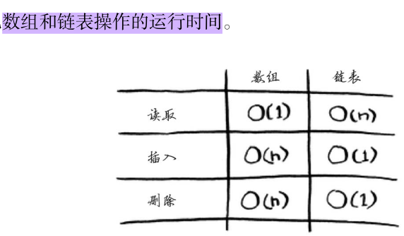

认识数据结构与算法¶
Chapter 1 准备工作¶
为了记录用C学习数据结构与算法，因为基础有限，就学到什么记录什么吧。记录结构使用：why–what–how （why 就是为什么要有这项技术，这项技术目的是啥，what是这个技术是什么，how就是怎么实现的）
写c的ide选择 codeblocks¶
why
因为这个比较轻量，自带编译器二进制版本,不需要配置环境，直接使用。visual studio比较臃肿.codeblock 的安装使用方面要比visual studio 方便很多，codeblock只需要创建个文件，保存后就可以直接编译执行，而visual studio需要创建一个项目。
跨平台使用：不管是在Windows还是Linux下都可以使用
what
一种IDE(集成开发环境)
how
这次安装时间在10min之内。 下载安装
C 指针与数组¶
指针
why
在某些情况下指针是表示计算的唯一方法
使用指针编写代码通常比用其他方法更加简洁高效
what
一个对象由两部分组成，对象的内容+对象在计算机中的存储位置。指针的作用就是可以通过*，&来读取对象的内容和地址。
how
&：读取对象地址。
p = &c即将c的地址赋值给变量p.*:读取对象内容。
y = *p即y读取了指针p指向的c的内容。
Example
> void swap(int *px, int *py) /* 互换 *px 与 *py */
> { int temp;
>
> temp = *px;
> *px = *py;
> *py = temp;
> }
数组
why
what
how
一维数组 a[5]， 多维数组 b[3][4]
Lecture 1¶
课程要掌握的知识点：A. Efficiency of Algorithms and Complexity Measures
Examples of algorithmic problems and introduction of complexity measures in terms of various resources (time, space, power consumption, number of exchanged messages, etc). (1 lectures)
Asymptotic complexity and notation in conjunction with a discussion on the worst-case versus the average-case complexity. Recurrence equations and master method. (2 lectures).
计算函数运行时间¶
使用clock(),时间单位是clock tick。常数CLK_TCK：机器时钟每秒所走的时钟打点数。
#include<stdio>
#include<time.h>
clock_t start, stop;
double duration;
int main(){
start = clock();
MyFunction();
stop = clock();
duration = ((double)(stop - start))/CLK_TCK;
return 0;
}
大O表示法¶
why
为了比较算法的效率（运行时间）
what
O(n) 用来表示算法的速度，此时的算法运行速度并不是指运行时间，而是操作数的增速。 n指操作数。
5种大O运行时间
O(log n)，也叫对数时间，这样的算法包括二分查找。
O(n)，也叫线性时间，这样的算法包括简单查找。
O(n * log n)，这样的算法包括第4章将介绍的快速排序——一种速度较快的排序算法。
O(n2)，这样的算法包括第2章将介绍的选择排序——一种速度较慢的排序算法。
O(n!)，这样的算法包括接下来将介绍的旅行商问题的解决方案——一种非常慢的算法
how
Lecture 2 线性表（List）¶
线性表顺序存储结构–数组¶
why 用来存储内存物理地址连续的变量，可以随机访问，内存大小固定。
what 类似于一个一个桶，固定内存大小，内存地址是连续的。可以随机访问。 
how 代码实现
线性表链式存储结构–链表¶
why
what 类似于手拉手的小朋友，需要通过上一个小朋友的指针知道下一个小朋友的地址，不可以随机访问，内存大小不固定。
how